Spatial Trajectory Screening
spatial-trajectory-screening.Rmd1. Introduction
Spatial Trajectory Screening (STS) pursues the hypothesis that
specific genes - or other numeric features for that matter - display
non-random expression patterns in relation to spatial reference
features, such as spatial trajectories. STS utilizes these reference
features to incorporate the integration of potential biological forces
in the identification of spatially variable genes, such as the direction
of tumorous infiltration. This allows for a supervised,
hypothesis-driven screening for spatial patterns, which, unlike
differential expression analysis (DEA), acknowledges the continuous
nature of gene expression and avoids the limitations of group-based
testing. The algorithm is wrapped up in the function
spatialTrajectoryScreening(). See the tutorial we are using
the same example sample that we used in the tutorial on creating spatial
trajectories - the glioblastoma sample UKF269T.
# load required packages
library(SPATA2)
library(tidyverse)
# load SPATA2 inbuilt data
object_t269 <- object_t269 <- loadExampleObject("UKF269T", process = TRUE, meta = TRUE)
# show image
plotImage(object_t269)
# created with code
plotSpatialTrajectories(
object = object_t269,
ids = "horizontal_mid",
color_by = "histology"
) 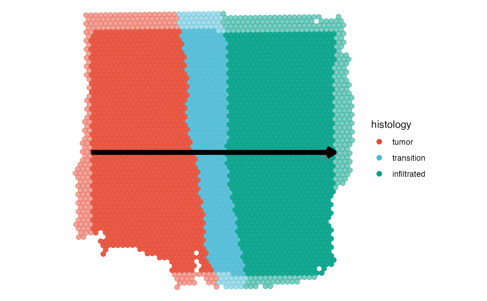
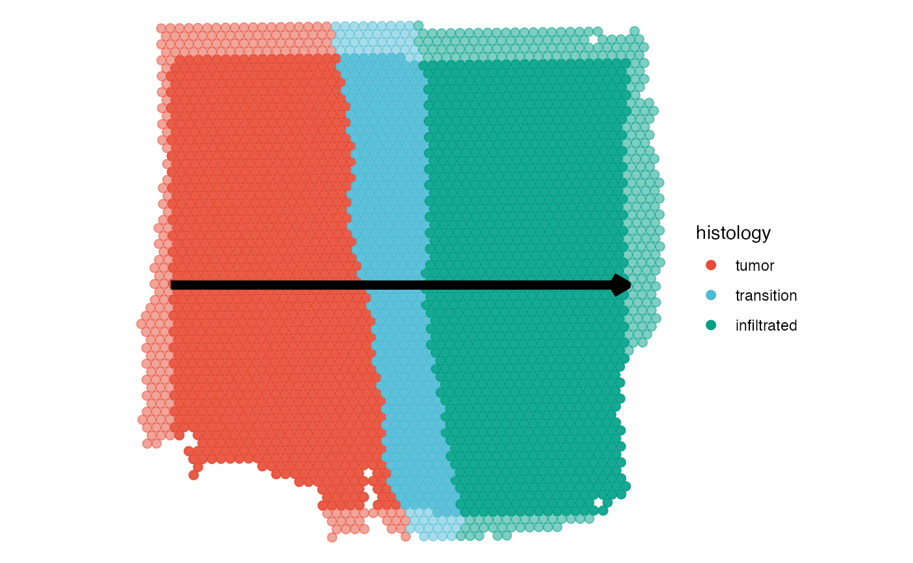
2. Run the algorithm
The function to use is called
spatialTrajectoryScreening(). The parameter
variables takes the numeric variables that are supposed to
be included in the screening process. Since all sorts of numeric
variables can be included in the screening, the argument for the input
is simply called variables. Here, we are using the genes
that were already identified as spatially variable by
SPARKX. The goal is to further analyze which of the genes
are expressed in a non-random and biologically meaningful way along the
trajectory.
# this is a wrapper around SPARK::sparkx()
object_t269 <- runSPARKX(object = object_t269)## ## ===== SPARK-X INPUT INFORMATION ====
## ## number of total samples: 3213
## ## number of total genes: 15000
## ## Running with single core, may take some time
## ## Testing With Projection Kernel
## ## Testing With Gaussian Kernel 1
## ## Testing With Gaussian Kernel 2
## ## Testing With Gaussian Kernel 3
## ## Testing With Gaussian Kernel 4
## ## Testing With Gaussian Kernel 5
## ## Testing With Cosine Kernel 1
## ## Testing With Cosine Kernel 2
## ## Testing With Cosine Kernel 3
## ## Testing With Cosine Kernel 4
## ## Testing With Cosine Kernel 5
# keep genes with a sparkx pvalue of 0.01 or lower
spark_df <- getSparkxGeneDf(object = object_t269, threshold_pval = 0.05)
# show results
spark_df## # A tibble: 8,734 × 3
## genes combinedPval adjustedPval
## <chr> <dbl> <dbl>
## 1 RPL22 0 0
## 2 ID3 0 0
## 3 MARCKSL1 0 0
## 4 PHC2 0 0
## 5 RPS8 0 0
## 6 WLS 0 0
## 7 GNG5 0 0
## 8 RPL5 0 0
## 9 CNN3 0 0
## 10 RHOC 0 0
## # ℹ 8,724 more rows
# name of the trajectory
id <- "horizontal_mid"
# `getSparkxGenes()` would work, too
input_genes <- spark_df[["genes"]]
# define start and end positions of the trajectory directly
object_t269 <-
addSpatialTrajectory(
object = object_t269,
id = id,
start = c("1.5mm", "4mm"),
end = c("6.5mm", "4mm"),
overwrite = TRUE
)
# note: the results are NOT stored in the SPATA2 object but in a separate object
sts_out <-
spatialTrajectoryScreening(
object = object_t269,
id = id, # ID of the spatial trajectory
variables = input_genes # the variables/genes to include in the screening
)
class(sts_out)Note: The output of
spatialTrajectoryScreening() is not saved
in the SPATA2 object but returned in a separate S4 object
of class SpatialTrajectoryScreening. Do
not overwrite the SPATA2 object by writing
object_t269 <- spatialTrajectoryScreening(object = object_t269, id = id, ...).
3. Results
The first step of the screening identifies pattern that are unlikely due to random gene expression. The second step fits the non-random gene expression pattern to predefined models which guides in interpretation and screening for specific gene expression pattern.
Slot @results$significance contains a data.frame with one row for each screened variable which provides information regarding the degree of randomness the inferred pattern contains as quantified by the total variation (tot_var). The p-value gives the probability to obtain such a total variation under complete randomness and indicates the degree of significance. Column fdr contains the adjusted p-value according to the False Discovery Rate.
sign_df <-
sts_out@results$significance %>%
filter(fdr < 0.05)
# show significance data.frame
sign_df## # A tibble: 1,492 × 6
## variables rel_var tot_var p_value norm_var fdr
## <chr> <dbl> <dbl> <dbl> <dbl> <dbl>
## 1 A1BG -0.597 7.77 0.0007 0.155 0.00143
## 2 A2M -0.348 6.19 0 0.124 0
## 3 ABAT -0.372 8.68 0.0063 0.174 0.00988
## 4 ABCD3 -0.282 9.26 0.0215 0.185 0.0292
## 5 ABHD17C -0.471 9.32 0.0233 0.186 0.0310
## 6 ABHD2 -0.552 6.60 0 0.132 0
## 7 ABL1 -0.671 9.59 0.0354 0.192 0.0444
## 8 AC104986.2 -0.458 8.25 0.0021 0.165 0.00369
## 9 ACAD8 -0.631 8.29 0.0024 0.166 0.00418
## 10 ACBD6 -0.761 8.87 0.0105 0.177 0.0156
## # ℹ 1,482 more rows3.1 Non-random gene expression gradients
The figures below show examples for gene expression gradient identified as non-random.
# extract variables names
non_random <- getSgsResultsVec(sts_out) %>% head(4)
trajectory_add_on <-
ggpLayerSpatialTrajectories(object = object_t269, ids = "horizontal_mid")
plotSurfaceComparison(
object = object_t269,
color_by = non_random,
pt_clrsp = "Reds 3",
outline = T,
nrow = 1
) +
trajectory_add_on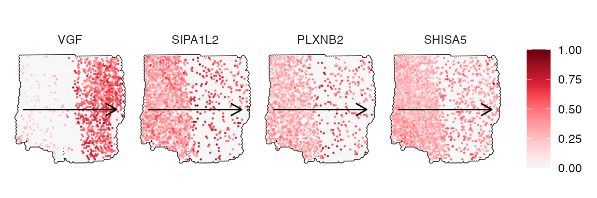
plotStsLineplot(object_t269, variables = non_random, id = "horizontal_mid", line_color = "red", nrow = 1) 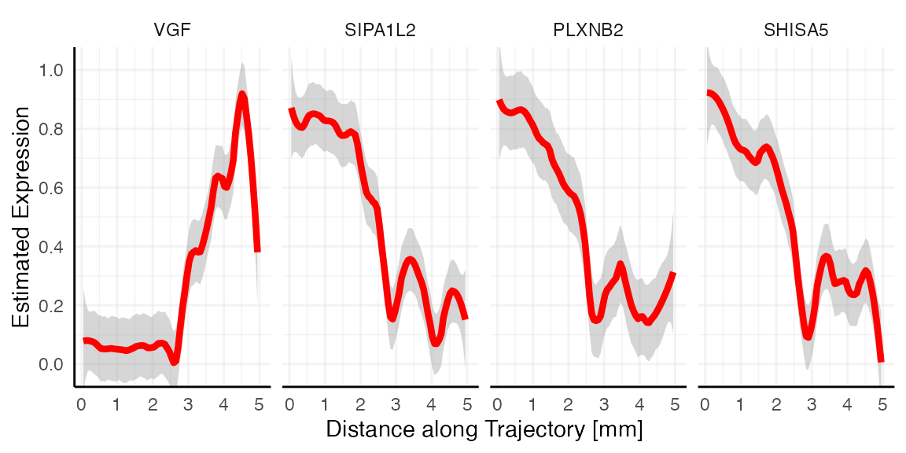
3.2 Random gene expression gradients
The figures below show examples for gene expression gradient identified as random.
# extract random variable names
random <-
sts_out@results$significance %>%
filter(fdr > 0.05) %>%
slice_max(tot_var, n = 4) %>%
pull(variables) %>%
head(4)
plotSurfaceComparison(
object = object_t269,
color_by = random,
pt_clrsp = "BuPu",
outline = T,
nrow = 1
) +
trajectory_add_on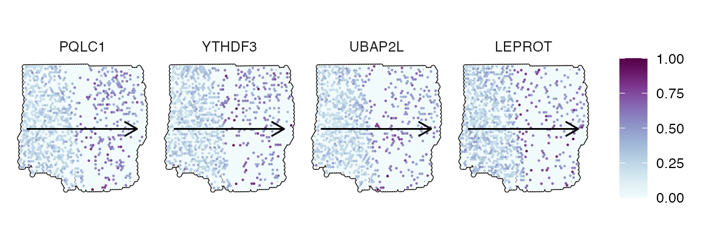
plotStsLineplot(object_t269, variables = random, id = "horizontal_mid", line_color = "blue", nrow = 1) 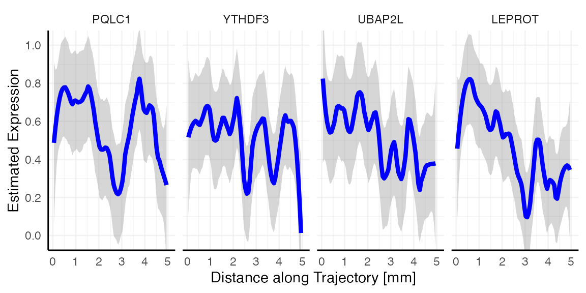
Random vs. non-random
Looking at the gradient of variable LEPROT (random, blue)
and SHISA5 (non-random, red) both feature a descending pattern
along the trajectory. How come that one is identified as most likely
random while the other is not? Spatial gradient screening decides which
variables are most likely random or not random by computing the variance
along the gradient, which is stored in the variable tot_var in
sts_out@results$significance. Consider both gradient plots
with the expression estimates plotted as black points, too. While
SHISA5 features a comparatively smooth decline, LEPROT
does not. The variance along its gradient is too high to be deemed
significant.
# left plot
plotStsLineplot(object_t269, variables = "LEPROT", line_color = "blue", id = "horizontal_mid") +
ggplot2::geom_point()
# right plot
plotStsLineplot(object_t269, variables = "SHISA5", line_color = "red", id = "horizontal_mid") +
ggplot2::geom_point()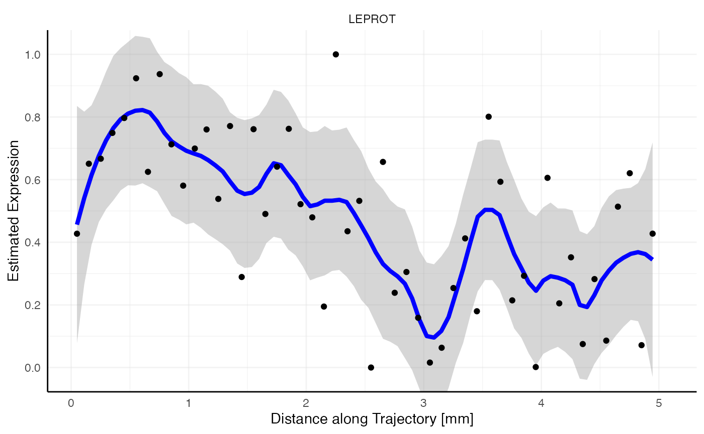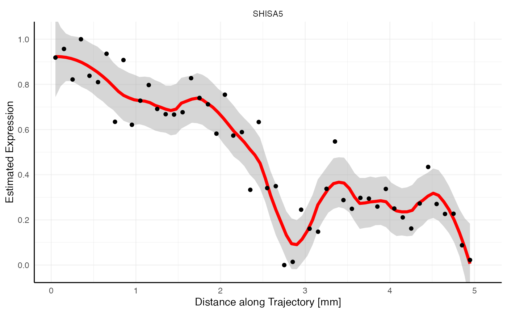
3.2 Model fits
The second step uses predefined models and fits them to the inferred
gradients of the pattern identified as non-random in the previous step.
The figure below shows the default models used by SPATA2. They can be
extended by the user for specific querries with the argument
model_add.
showModels(nrow = 4) +
labs(x = "Distance along Trajectory [%]")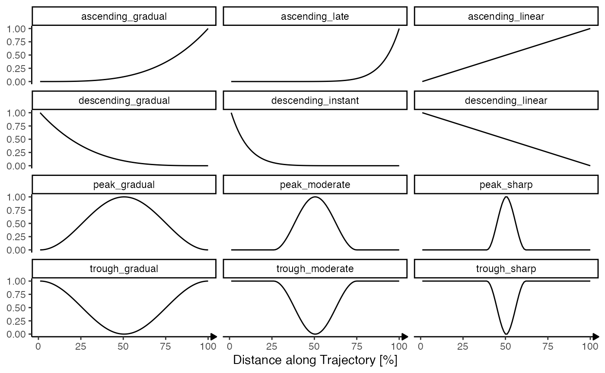
Slot @results$model_fits contains the model fitting results. It is a data.frame where each row corresponds to a variable ~ model pair. The columns mae (mean absolute error) and rmse (root mean squared error) indicate the quality of the fit. The lower the value the better.
best_fits <-
sts_out@results$model_fits %>%
filter(variables %in% sign_df[["variables"]]) %>%
group_by(variables) %>%
slice_min(mae, n = 1)
best_fits## # A tibble: 1,492 × 4
## # Groups: variables [1,492]
## variables models mae rmse
## <chr> <chr> <dbl> <dbl>
## 1 A1BG descending_linear 0.172 0.216
## 2 A2M descending_linear 0.172 0.218
## 3 ABAT descending_linear 0.193 0.246
## 4 ABCD3 descending_linear 0.215 0.253
## 5 ABHD17C descending_linear 0.201 0.260
## 6 ABHD2 descending_linear 0.181 0.217
## 7 ABL1 descending_linear 0.179 0.225
## 8 AC104986.2 descending_linear 0.196 0.235
## 9 ACAD8 descending_linear 0.171 0.212
## 10 ACBD6 descending_linear 0.240 0.281
## # ℹ 1,482 more rowsThe following code chunk extracts the genes that followed each model best.
best_fits_by_model <-
group_by(best_fits, models) %>%
slice_min(mae, n = 1) %>%
filter(rmse < 0.2) # threshold suggestions for root mean squared error
best_fits_by_model## # A tibble: 6 × 4
## # Groups: models [6]
## variables models mae rmse
## <chr> <chr> <dbl> <dbl>
## 1 VGF ascending_gradual 0.110 0.171
## 2 ARC ascending_linear 0.132 0.184
## 3 RDH10 descending_gradual 0.133 0.163
## 4 SIPA1L2 descending_linear 0.112 0.141
## 5 SELENOP peak_moderate 0.121 0.145
## 6 MOBP peak_sharp 0.124 0.155
plotSurfaceComparison(
object = object_t269,
color_by = best_fits_by_model[["variables"]],
outline = TRUE,
display_image = FALSE,
pt_clrsp = "Reds 3",
nrow = 2
) +
trajectory_add_on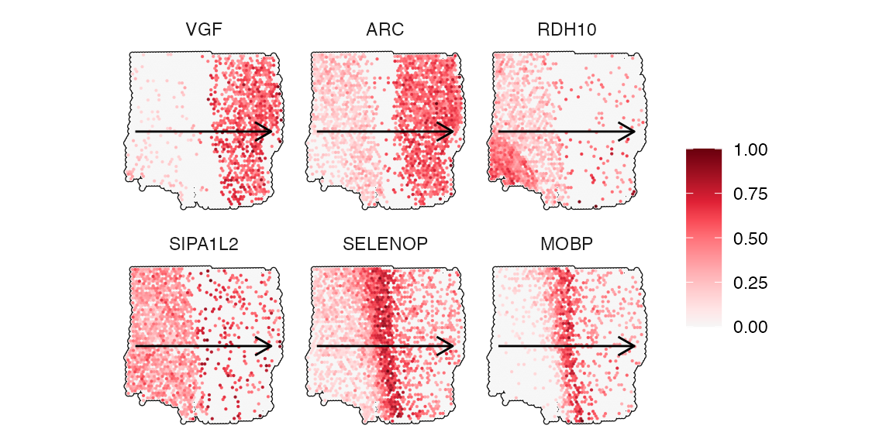
plotStsLineplot(
object = object_t269,
variables = best_fits_by_model[["variables"]],
id = "horizontal_mid",
line_color = "red",
nrow = 2
)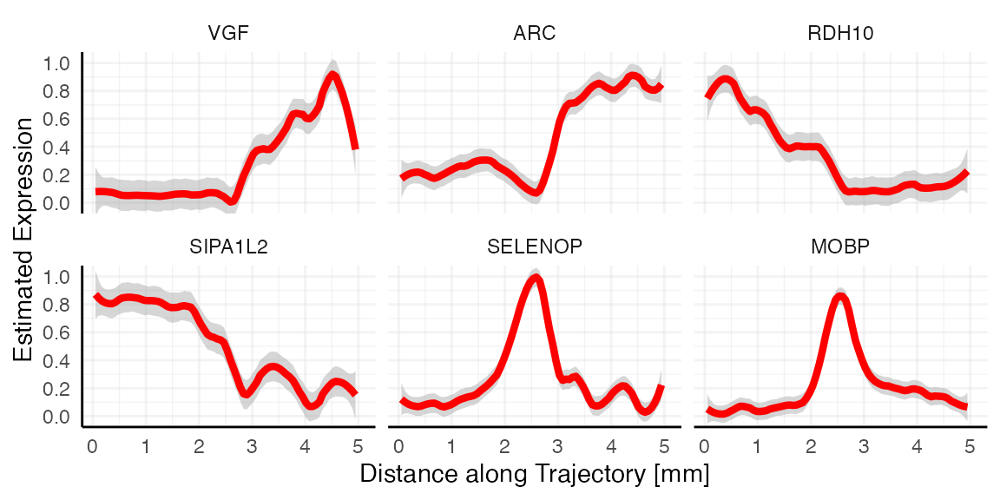